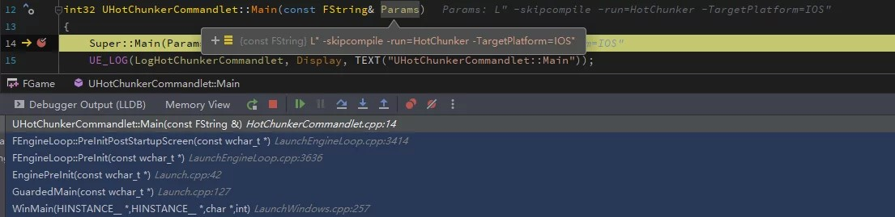
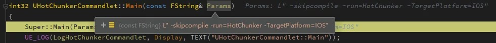

Ue commandlet
Commandlet¶
什么是 Commandlet¶
UE 的 Commandlet 是一种可以用命令行的方式去驱动引擎的机制，如传统的命令行程序：
int main(int argc,char* agrv[]){
for (int i = 0; i < argc; i++){
cout << argv[i] << endl;
}
}
./arg_printer -test1 -test2
UE4Editor-cmd.exe D:\Client\FGame.uproject -run=cook
创建 Commandlet¶
为项目或插件创建 Commandlet，通常会在模块类型为 Editor 的 Module 中添加，因为执行 Commandlet 的逻辑，很少会涉及到运行时，都是在引擎环境下执行的。
创建自定义的 Commandlet，需要创建一个继承自 UCommandlet 的 UObject 类：
UGenerateTileCommandlet::UGenerateTileCommandlet()
int32 UGenerateTileCommandlet::Main(const FString &Params)
其中的 Main 函数，就是当通过 -run= 命令启动该 Commandlet 时，会执行到的逻辑，就像前面纯 C++ 的 main 函数一样。
不过，需要注意的是，因为 Commandlet 其实是完整的引擎环境，所以执行时会拉起已注册模块的启动，相当于有很多的前置逻辑需要执行，等执行到 Main 函数时，就是完整的引擎状态了。
可以在这个函数之内做自定义的操作，此时它具有完整的引擎环境，可以根据自己的需要进行数据导出或资源处理。
运行 Commandlet¶
前面已经提到了，运行一个 Commandlet 需要用以下的命令形式：
UE4Editor-cmd.exe PROJECT_NAME.uproject -run=CMDLET_NAME
启动项目中的 Commandlet 时，必须要指定项目路径，因为要去加载工程及插件中的模块。
参数 -run=，指定的是要执行的 Commandlet 的名字，这个名字和前面创建的继承自 UCommandlet 类名字直接相关：如 UResScannerCommandlet 它的 Commandlet 的名字就为 ResScanner，规则就是去掉头部的 U 以及尾部的 Commandlet。
引擎内接收到 -run= 的参数，会去查找 UClass，并会自动拼接 Commandlet 后缀：
// Token -- XXXXCommandlet
CommandletClass = FindObject<UClass>(ANY_PACKAGE,*Token,false);
拿到 UClass 之后，创建一个实例，然后调用它的 Main 函数：
Unreal/CarlaUE4/Plugins/CarlaTools/Source/CarlaTools/Private/Commandlet/GenerateTileCommandlet.cpp
OpenDriveMap = NewObject<UOpenDriveToMap>(this, OpenDriveClass);
OpenDriveMap->FilePath = ParamsMap["FilePath"];
OpenDriveMap->BaseLevelName = ParamsMap["BaseLevelName"];
OpenDriveMap->OriginGeoCoordinates = FVector2D(FCString::Atof(*ParamsMap["GeoCoordsX"]),FCString::Atof(*ParamsMap["GeoCoordsY"]));
OpenDriveMap->CurrentTilesInXY = FIntVector(FCString::Atof(*ParamsMap["CTileX"]),FCString::Atof(*ParamsMap["CTileY"]), 0);
// Parse Params
OpenDriveMap->GenerateTile();
!!! 注意
是启动了所有模块之后才会进入到 Commandlet 的 Main 中，意味着模块的 StartupModule 在 Main 之前。
引擎执行 Commandlet Main 函数的调用栈：

检测 Commandlet¶
根据上面的内容，需要记住以下两个关键点：
- Commandlet 位于 Editor 模块内
- Commandlet 进入到 Main 之后就是完整的引擎环境
因为 Commandlet 是位于 Editor 模块内的，有可能会调用到模块内的其他函数，为了区分 Editor 启动还是 Commandlet 启动，可以用以下函数进行检测：
if(::IsRunningCommandlet()) { // do something }
传递进来的是不包含引擎路径和项目路径的参数。
如，运行命令：
UE4Editor-cmd.exe G:\Client\FGame.uproject -skipcompile -run=HotChunker -TargetPlatform=IOS
则接收到的参数为：
-skipcompile -run=HotChunker -TargetPlatform=IOS

可以通过解析该命令行参数，在 Commandlet 执行特殊行为。以 HotPatcher 为例，可以通过 -config= 指定配置文件，在 Commandlet 中就会读取并根据配置文件执行。
驱动 Tick¶
Commandlet 默认是一个独立过程行为，不会驱动引擎 Tick，就像一个普通的函数，所有代码执行完毕之后，离开当前的作用域，就请求退出引擎了。
介入到某个 Cmdlet 流程¶
以 Cook 为例，它是拉起来了一个 CookCommandlet 去执行。默认情况下，引擎并没有给我们留口子，去介入到 Cook 的各个阶段，如果想要在打包的过程中去做一些操作，就需要自己操纵 UAT 把构建过程拆开，自己维护各个流程。
但这么做的代价比较高，考虑以下这些需求：
- 在 Cook 完毕之后去训练 Shader 的字典，并把用字典压缩的 ShaderLibrary 替换原始的。
在默认情况下，要实现它，就需要把打包过程在 Cook 之后停掉，处理完自定义流程之后，再进入的 UnrealPak 阶段，接着执行。
整个过程都比较的繁琐，如果我们想要在 Cook 之后自动执行，还可以用另一种方式，介入到 Commandlet 的执行进程中。
根据前文的介绍我们知道，Commandlet 在执行中，也是会执行模块的 StartupModule 及 ShutdownModule 的，而我们想要介入到 Cmdlet 中执行，就是要利用这个特性。
同样以 Cook 之后，让引擎拉起我们的自定义处理流程为例，可以拆解这个需求：
- 确定是否运行在 CookCommandlet 中
- 在 Cook 执行完毕后，引擎退出之前的时机执行
关于第一点，我们可以解析启动的命令行参数，并检查 -run= 的 Token 是不是 Cook，就能确定是否是在 CookCommandlet 中：